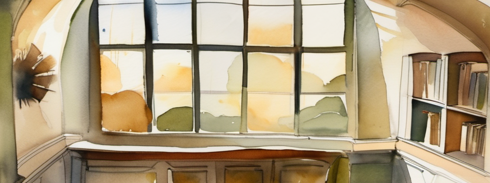
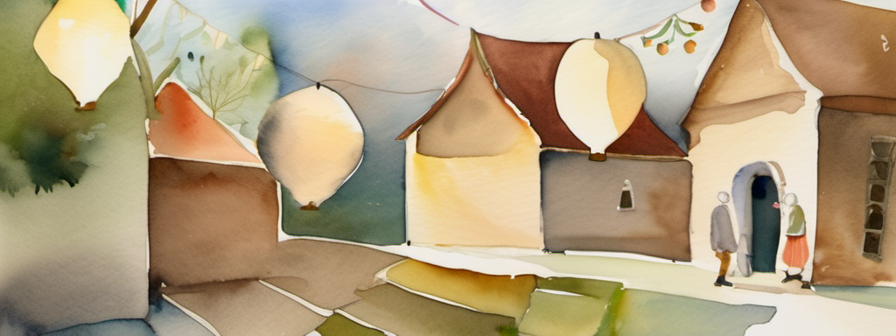

The clock has stood still since the first frost.Carry the escapement gear home to Tace.

Examinethe case
Open
Usea thing
Talkno one here
it’s locked — a small brass lock holds the little door fast.
the worn ledgerread · examine

up, to the loft

east, to the square
Bell is nearsomeone else is dreaming here
The Stopped Clock
You are Wick, a traveler in a dusk-colored coat, a satchel worn crosswise.
— curious
the dream murmurs
the base of a great stopped clock, its brass face gone still and patient, dust turning slow in a shaft of late gold; a tall glass-fronted case stands against one wall, and a worn ledger waits open on a lectern
the escapement gear
Wick’s satchelyour carried things
the escapement gear
a stub of
beeswax candle
beeswax candle
room to
gather more
gather more
drag a thing onto something to give or use it